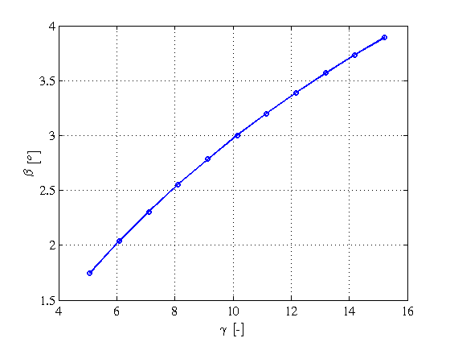
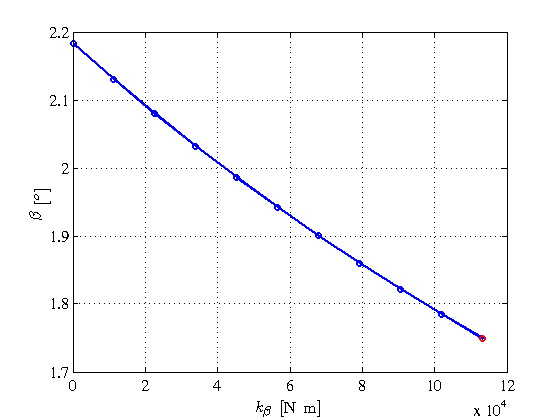
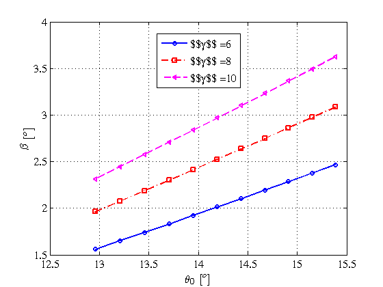
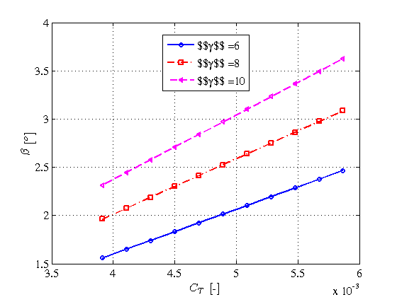
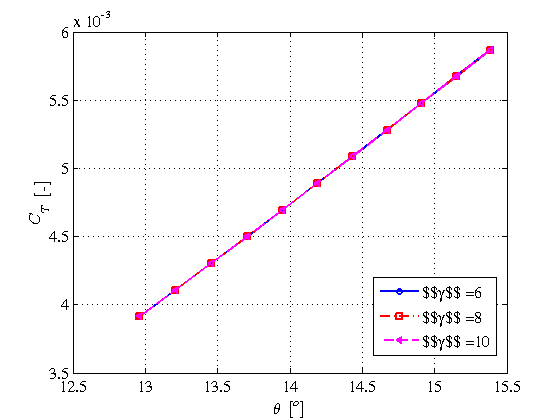
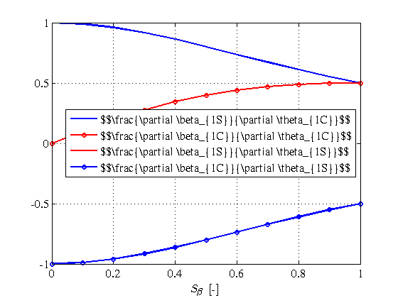
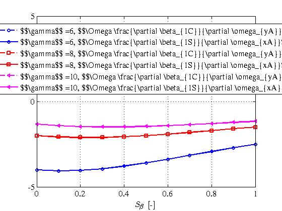
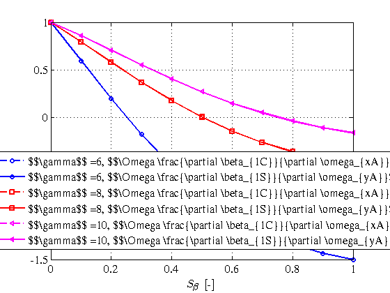

Contents
- Aeromechanics of a hovering flight condition of an isolated rotor
- How to compute blade conning
- Blade conning variation with Lock's number
- Influence of flapping stiffness on the blade conning
- Blade conning variation with collective pitch and Lock number
- Control derivatives of the rotor as function of stiffness number
- Damping derivatives of the rotor as function of stiffness number
- References
Aeromechanics of a hovering flight condition of an isolated rotor
The goals of this demo are the following ones: * How to compute blade conning using aeromechanics * How the
setPlot
close all
r2d = 180/pi;
How to compute blade conning
First we define the reference helicopter which is a Bo-105 at the sea level. To obtain such a helicopter we should create an instance of a rigid helicopter by calling to the rigidBo105 function. Rigid helicopter functions require one input argument which is the corresponding ISA atmosphere. For this demo we create an ISA+0 atmosphere. After building up the reference helicopter instance, heRef, we proceed to transform the rigid helicopter with physical dimensions to a nondimensional equivalent helicopter using the function rigidHe2ndHe. This function requires the atmosphere and altitude to determine the corresponding nondimensional helicopter, ndHeRef. Once the nondimensional helicopter is built up we store the nondimensional rotor substructure of ndHeRef at the ndRotorRef variable. This is important because heroes aeromechanic functionality works with non dimensional rotors.
atm = getISA; heRef = rigidBo105(atm); ndHeRef = rigidHe2ndHe(heRef,atm,0); ndRotorRef = ndHeRef.mainRotor;
Aeromechanic analysis establishes the steady state of flapping coefficients as the steady state to harmonic excitation of the rotor dynamic system. The forcing condition of the rotor dynamic system is mainly the pitch control, translational and angular rotor velocities together with induced velocity field over the rotor. However, hover fligh condition imposes important simplification to the flight condition velocities because both translational and angular rotor hub velocities are zero. At this demo we just consider an isolated hovering rotor and we are interested in the conning of the blades. Therefore, only force balance at the perdicular axis of rotation plane is required for the moment. Using equation (3.117) of [1] we can express the collective pitch as a function of the traction coefficient, CT, for the particular case of hover flight condition, i.e. mu_xA=0. Then we can define a function handle to express the functional dependency as follows. First we extract from the nondimensional rotor structure the required nondimensional parameters such as solidity, lift slope and blade twist. Then, the function handle f_theta0 give us the required collective pitch to balance a given thrust coefficient CT. Therefore, for the reference weight of the Bo-105, there exists the reference thrust coefficient, which is ndRotorRef.CW. Using this value at the collective pitch function handle we can compute the reference collective pitch theta0Ref. The reference collective pitch obtained is about 14.2 degrees.
sigma = ndRotorRef.sigma0; cla = ndRotorRef.cldata(1); theta1 = ndRotorRef.theta1; f_theta0 = @(CT) 6*CT/sigma/cla - 3*theta1/4 + 3/2*sqrt(CT/2); CTRef = ndRotorRef.CW; theta0Ref = f_theta0(CTRef);
The next step is to define the aeromechanic problem to solve by specifying the corresponding inputs. The aeromechanic main function requires as inputs the control vector, thetaRef, the trim flight condition velocity vector, fC0, the gravity acceleration unitary vector expressed in the hub coordinate frame, GA, the atmospheric nondimensional wind velocity, muW, and the nondimensional rotor structure, ndRotorRef.
The control vector is a column vector of size 3x1 being collective, lateral and longitudinal pitch angles the corresponding rows. For the particular case of this section we just input a collective pitch, that is the previously computed theta0Ref pitch angle.
The trim and stability flight condition input is a column vector of size 6x1 in which the first three slots are the three translational velocity components and the last three slots are the three angular velocity components. For the hover condition the flight condition vector, fc0, is a zeros(6,1).
The gravity acceleration unitary vector expressed in the hub coordinate frame, GA, it represents how the hub rotor frame is oriented in the space with respect to a ground reference system. Therefore, we need to know at least two Euler angles. For the particular case of this demo we are going to assume that the rotor plane of rotation is perpendicular to the gravity acceleration. In a more general problem the Euler angles should be computed by solving the general problem of the helicopter trim.
The atmospheric nondimensional wind velocity vector is for this particular case zero.
The aeromechanic problem defines a nonlinear system of equations to solve the flapping coefficient, the thrust coefficient and the induced velocity vectors as a function of the steady state harmonic forcing due to pitch angle (control vector), translational and angular velocities of the rotor frame, and the atmoshperic wind velocity. The more general case treated by heroes include an harmonic decomposition not only for the induced velocity but also for the thrust coefficient. Therefore the solution of the aeromechanic problem yields a solution vector of size 9x1 which consists of the three flapping coefficients, the three harmonic coefficients for the induced velocity and the rotor thrust
Heroes provides the function aeromechanicsLin to obtain flapping, induced velocity and rotor thrust coefficient vectors from an initial guess x0 using a nonlinear solver like for instance fsolve. Hence, we define the aeromechanic system to solve, system2solve, by defining a function handle with the basic vector of unknowns x as the input argument of the function handle.
thetaRef = [theta0Ref; 0; 0]; fC0 = zeros(6,1); GA = [0; 0; -1]; muW = [0; 0; 0]; system2solve = @(x) aeromechanicsLin(x,thetaRef,fC0,GA,muW,ndRotorRef);
The next step is to solve the aforedefined aeromechanic problem using the fsolve matlab function. To use the fsolve function we need to input the system of nonlinear equations as a function handle. Therefore, the aforedefined function handle, system2solve, is ready to be input to fsolve. Matlab's fsolve requires an initial guess to search for a solution of the nonlinear system of equations. We are interested in the constant parts of the harmonic decomposition of the flapping, induced velocity and thrust coefficient vectors because the lateral and longitudinal parts are not going to be considered. We assume an initial guess of about 2 degrees for the blade conning, the induced velocity for a hovering rotor of thrust coefficient CTRef is the well-known result of -sqrt(CTRef/2). Once the initial guess is defined we setup a consistent options structure for fsolve by calling the optimset function. Finally to solve the aeromechanic problem we use the fsolve function and the blade conning is stored at the beta0Ref variable.
x0Ref = [2/r2d; 0; 0; ... -sqrt(CTRef/2); 0; 0; ... CTRef; 0; 0]; opt = optimset('Display','off'); xRef = fsolve(system2solve,x0Ref,opt); beta0Ref = xRef(1); disp(strcat('Blade conning:',num2str(beta0Ref*r2d),'degrees'));
Blade conning:1.749degrees
Blade conning variation with Lock's number
Lock's number is a nondimensional number which represents the ratio between aerodynamic moment at flapping coupling to inertia moment. The higher the Lock's number is the rotor less rigid is. Therefore, increasing Lock's number means that the flapping angles should be lower.
Now, we want to compute the variation of blade conning with Lock's number. First we store the reference Lock number at sea level of the Bo105 helicopter and we setup a variation of Lock number from the reference value upto three times this value. The vector Lock_i stores this variation of Lock number.
LockRef = ndRotorRef.gamma; n_g = 11; Lock_i = LockRef*linspace(1,3,11); beta0_g = zeros(n_g,1);
Next, to obtain the variation of blade conning as Lock number changes we should loop through the Lock number variation and override the value of the gamma field at the nondimensional rotor structure, ndRotorRef. We use the reference value of the blade conning as the initial guess for the nonlinear solver fsolve and then we update the blade conning initial guess with the converged solution.
b0 = beta0Ref; for i = 1:n_g ndRotor_g = ndRotorRef; ndRotor_g.gamma = Lock_i(i); s2s_g = @(x) aeromechanicsLin(x,thetaRef,fC0,GA,muW,ndRotor_g); x0_g = [b0; 0; 0; ... -sqrt(CTRef/2); 0; 0; ... CTRef; 0; 0]; x_g = fsolve(s2s_g,x0_g,opt); beta0_g(i) = x_g(1); b0 = x_g(1); end
Then we simply plot the blade conning as a function of the Lock's number and we can observe as we would have expected that the blade conning increases as the Lock number increases also. This is a consequence of the decreasing of flapping inertia moment of the blade on the rotor blade dynamics. Another important observation is due to the fact that Bo105 is considered a rigid rotor the values of conning are extremely low, about two degrees maximum, and as the Lock number increases the conning increases attaining about 3 or 4 degrees maximum.
figure(1) plot(Lock_i,beta0_g*r2d,'b-o'); hold on; xlabel('$$\gamma$$ [-]'); ylabel('$$\beta$$ [$$^o$$]'); grid on;
Influence of flapping stiffness on the blade conning
Now we want to obtain the variation of blade conning with flapping stiffness. The flapping stiffness of Bo105 is quite high and the aeromechanic behaviour of the rotor is therefore quite rigid. We establish a variation of flapping stiffness from the actual Bo105 value to the limit value of a fully hinged rotor, i.e. kBeta = 0. Then, we proceed analogously to the above section. We define the vector of flapping stiffness kBeta_i and we loop through this vector overriden at each iteration the corresponding field of the dimensional helicopter structure which for this case is mainRotor.kBeta. Note that modifying flapping stiffness only affects to the nondimensional flapping natural frequency, that is lambda_beta.
n_k = 11; kBetaRef = heRef.mainRotor.kBeta; kBeta_i = linspace(0,kBetaRef,n_k); beta0_k = zeros(n_k,1); b0 = beta0Ref; for i = 1:n_k he_k = heRef; he_k.mainRotor.kBeta = kBeta_i(i); ndHe_k = rigidHe2ndHe(he_k,atm,0); ndRotor_k = ndHe_k.mainRotor; theta_k = [theta0Ref; 0; 0]; s2s_k = @(x) aeromechanicsLin(x,thetaRef,fC0,GA,muW,ndRotor_k); x0k = [b0; 0; 0; ... -sqrt(CTRef/2); 0; 0; ... CTRef; 0; 0]; x = fsolve(s2s_k,x0k,opt); beta0_k(i) = x(1); b0 = x(1); end
Once we have computed the conning blade variation with flapping stiffness we plot it together with the reference value. As it can be observed and as it was expected the blade conning increases as the flapping stiffness decreases, the nondimensional flapping natural frequency is lower and therefore the rotor behaves more like a fully hinged rotor.
figure(5) plot(kBeta_i,beta0_k*r2d,'b-o'); hold on; plot(kBetaRef,beta0Ref*r2d,'r o'); hold on; xlabel('$$k_\beta$$ [N m]'); ylabel('$$\beta$$ [$$^o$$]'); grid on;
Blade conning variation with collective pitch and Lock number
Now, we want to obtain the variation of blade conning with helicopter weight, or collective pitch together with a variation of Lock number.
First a vector of weights is defined from a 80% upto 120% of the nominal weight WRef and we select tree Lock numbers of 6, 8 and 10. AS we are going to plot thrust coefficient, blade conning angle and collective pitch variations we allocate the corresponding matrices before looping through the weight and Lock number variations. Note that we are now defining a bi-parametric dependency. Therefore we define bidimensional matrices for storing the blade conning, collective pitch and thrust coefficient. Both collective pitch and thrust coefficient does depend on the weight coefficient but they do not depend on Lock number.
n_w = 11; WRef = heRef.inertia.W; Wscale = linspace(0.8,1.2,n_w); W_i = WRef*Wscale; CWRef = ndRotorRef.CW; Lock_j = [6,8,10]; n_l = length(Lock_j); leg = cell(1,n_l); beta0_wl = zeros(n_w,n_l); CT_wl = zeros(n_w,n_l); theta0_wl = zeros(n_w,n_l); for j = 1:n_l for i = 1:n_w ndRotor_wl = ndRotorRef; CT_wl(i,j) = CWRef*W_i(i)/WRef; ndRotor_wl.CW = CT_wl(i,j); ndRotor_wl.gamma = Lock_j(j); theta0_wl(i,j) = f_theta0(CT_wl(i,j)); theta_wl = [theta0_wl(i,j); 0; 0]; s2s_wl = @(x) aeromechanicsLin(x,theta_wl,fC0,GA,muW,ndRotor_wl); x0wl = [b0; 0; 0; ... -sqrt(CT_wl(i,j)/2); 0; 0; ... CT_wl(i,j); 0; 0]; x = fsolve(s2s_wl,x0wl,opt); beta0_wl(i,j) = x(1); end leg{j} = strcat('$$\gamma$$ = ',num2str(Lock_j(j))); end
The we plot the variation of blade conning as a function of collective pitch with the Lock number as a parameter. To do so, we loop through the Lock number and plot blade conning as a function of collective pitch and thrust coefficient. We define a cell vector of markers, mark, with three markers for each Lock number.
mark = {'b-o','r-.s','m--<'};
figure(9)
for j = 1:n_l
plot(theta0_wl(:,j)*r2d,beta0_wl(:,j)*r2d,mark{j}); hold on;
end
xlabel('$$\theta_0$$ [$$^o$$]'); ylabel('$$\beta$$ [$$^o$$]'); grid on;
legend(leg,'Location','Best');
figure(10)
for j = 1:n_l
plot(CT_wl(:,j),beta0_wl(:,j)*r2d,mark{j}); hold on;
end
xlabel('$$C_T$$ [-]'); ylabel('$$\beta$$ [$$^o$$]'); grid on;
legend(leg,'Location','Best');
  Finally, we plot the thrust coefficient as a function of collective pitch and we check that it does not depend on the Lock number as it is well known.
figure(11) for j = 1:n_l plot(theta0_wl(:,j)*r2d,CT_wl(:,j),mark{j}); hold on; end xlabel('$$\theta$$ [$$^o$$]'); ylabel('$$C_T$$ [-]'); grid on; legend(leg,'Location','Best');
Control derivatives of the rotor as function of stiffness number
We are going to compute the control derivatives of the rotor. These control derivatives are the variation of cyclic flapping angles with respect to the variation of the cyclic pitch angles. Hence, there exist four control derivatives. As the aeromechanic model is linear in the flapping equations with respect to the control vector we can evaluate the control derivatives by imposing 1 degree of cyclic pitch angle and computing the cyclic flapping angles. The control derivatives are then the corresponding cyclic flapping angles.
We are going to evaluate such control derivatives as functions of the stiffness number for the sea level hovering condition. We setup n_a stiffness numbers which range from 0 to 1 and we input two control vectors corresponding each of them to a lateral pitch angle, theta_1C, and the longitudinal pitch angle vector, theta_1S. Then we allocate the matrices to store the flapping angles.
n_a = 11; theta1C = 1/r2d; theta1S = 1/r2d; SBeta_a = linspace(0,1,n_a); theta_1C = [theta0Ref;theta1C;0]; theta_1S = [theta0Ref;0;theta1S]; beta0_a = zeros(n_a,1); beta1C_1C = zeros(n_a,1); beta1S_1C = zeros(n_a,1); beta1C_1S = zeros(n_a,1); beta1S_1S = zeros(n_a,1); b0 = beta0Ref;
To compute the control derivatives we only need to loop through the stiffness number variation overrinding the stiffness number field of the nondimensional reference rotor and then we need to solve two different tines the aeromechanic problem. The first one to obtain the control derivatives corresponding a variation of 1 degree of lateral pitch angle, that is beta1C_1C and beta1C_1S, and the other one to compute the control derivatives with respect to the longitudinal pitch angle, beta1C_1S and beta1S_1S.
for i = 1:n_a ndRotor_a = ndRotorRef; ndRotor_a.SBeta = SBeta_a(i); x0_a = [b0; 0; 0; ... -sqrt(CTRef/2); 0; 0; ... CTRef; 0; 0]; s2s_1C = @(x) aeromechanicsLin(x,theta_1C,fC0,GA,muW,ndRotor_a); x_1C = fsolve(s2s_1C,x0_a,opt); beta1C_1C(i) = x_1C(2); beta1S_1C(i) = x_1C(3); s2s_1S = @(x) aeromechanicsLin(x,theta_1S,fC0,GA,muW,ndRotor_a); x_1S = fsolve(s2s_1S,x0_a,opt); beta1C_1S(i) = x_1S(2); beta1S_1S(i) = x_1S(3); end
Finally we plot the control derivatives as function of the stiffness number and we reproduce Figure 2.21 of reference [2]. Note that this figure is a subset of the results shown in Figures 5.33(a) and 5.33(b) of reference [1] for the particular case of hover flight condition, mu_XA = 0. Solid lines denote the direct flapping response and solid lines with circle markers denote coupled flapping response.
figure(12) plot(SBeta_a,beta1S_1C./theta1C,'b-'); hold on; plot(SBeta_a,beta1C_1C./theta1C,'r-o'); hold on; plot(SBeta_a,beta1S_1S./theta1S,'r-'); hold on; plot(SBeta_a,beta1C_1S./theta1S,'b-o'); hold on; xlabel('$$S_\beta$$ [-]'); grid on; legend(... '$$\frac{\partial \beta_{1S}}{\partial \theta_{1C}}$$',... '$$\frac{\partial \beta_{1C}}{\partial \theta_{1C}}$$',... '$$\frac{\partial \beta_{1S}}{\partial \theta_{1S}}$$',... '$$\frac{\partial \beta_{1C}}{\partial \theta_{1S}}$$',... 'Location','Best' ... )
Damping derivatives of the rotor as function of stiffness number
We are going to compute the damping derivatives of the rotor. These derivatives represent the change in flapping due to helicopter pitch or roll angular speeds. Damping derivatives are functions of both Lock and stiffness numbers. Hence, to reproduce figures 2.21(b9 and 2.21(c) of reference [2] we define a variation of Lock numbers of [4, 8, 12] and a range of stiffness numbers between [0,1].
n_s = 11; omegaxA = 1.0; omegayA = 1.0; SBeta_s = linspace(0,1,n_s); theta_st = [theta0Ref;0;0]; Lock_t = [4, 8, 12]; n_t = length(Lock_t); fC_xA = [0;0;0;omegaxA;0;0]; fC_yA = [0;0;0;0;omegayA;0]; beta1C_xA = zeros(n_s,n_t); beta1S_xA = zeros(n_s,n_t); beta1C_yA = zeros(n_s,n_t); beta1S_yA = zeros(n_s,n_t); b0 = beta0Ref; leg_t = cell(n_t,1); for i = 1:n_t ndRotor_ts = ndRotorRef; ndRotor_ts.gamma = Lock_t(i); leg_t{i} = strcat('$$\gamma$$ =',num2str(Lock_t(i))); for j = 1:n_s ndRotor_ts.SBeta = SBeta_s(j); x0_ts = [b0; 0; 0; ... -sqrt(CTRef/2); 0; 0; ... CTRef; 0; 0]; s2s_xA = @(x) aeromechanicsLin(x,theta_st,fC_xA,GA,... muW,ndRotor_ts); x_xA = fsolve(s2s_xA,x0_ts,opt); beta1C_xA(j,i) = x_xA(2); beta1S_xA(j,i) = x_xA(3); s2s_yA = @(x) aeromechanicsLin(x,theta_st,fC_yA,GA,... muW,ndRotor_ts); x_yA = fsolve(s2s_yA,x0_ts,opt); beta1C_yA(j,i) = x_yA(2); beta1S_yA(j,i) = x_yA(3); end end mark = {'b-.o','r-.s','m-.<','b-o','r-s','m-<'}; leg_ts = cell(2*n_t,1); figure(13) for i = 1:n_t i1 = 1 + 2*(i-1); leg_ts{i1} = strcat(leg{i},... ', $$\Omega \frac{\partial \beta_{1C}}{\partial \omega_{yA}}$$'); leg_ts{i1+1} = strcat(leg{i},... ', $$\Omega \frac{\partial \beta_{1S}}{\partial \omega_{xA}}$$'); plot(SBeta_s,beta1C_yA(:,i)./omegayA,mark{i}); hold on; plot(SBeta_s,beta1S_xA(:,i)./omegaxA,mark{i+n_t}); hold on; end xlabel('$$S_\beta$$ [-]'); grid on; legend(leg_ts,'Location','Best') figure(14) for i = 1:n_t i1 = 1 + 2*(i-1); leg_ts{i1} = strcat(leg{i},... ', $$\Omega \frac{\partial \beta_{1C}}{\partial \omega_{xA}}$$'); leg_ts{i1+1} = strcat(leg{i},... ', $$\Omega \frac{\partial \beta_{1S}}{\partial \omega_{yA}}$$'); plot(SBeta_s,beta1C_xA(:,i)./omegaxA,mark{i}); hold on; plot(SBeta_s,beta1S_yA(:,i)./omegayA,mark{i+n_t}); hold on; end xlabel('$$S_\beta$$ [-]'); grid on; legend(leg_ts,'Location','Best')
Warning: Unable to interpret TeX string "$$\gamma$$
=6, $$\Omega \frac{\partial \beta_{1C}}{\partial
\omega_{yA}}$$"
Warning: Unable to interpret TeX string "$$\gamma$$
=6, $$\Omega \frac{\partial \beta_{1S}}{\partial
\omega_{xA}}$$"
Warning: Unable to interpret TeX string "$$\gamma$$
=8, $$\Omega \frac{\partial \beta_{1C}}{\partial
\omega_{yA}}$$"
Warning: Unable to interpret TeX string "$$\gamma$$
=8, $$\Omega \frac{\partial \beta_{1S}}{\partial
\omega_{xA}}$$"
Warning: Unable to interpret TeX string "$$\gamma$$
=10, $$\Omega \frac{\partial \beta_{1C}}{\partial
\omega_{yA}}$$"
Warning: Unable to interpret TeX string "$$\gamma$$
=10, $$\Omega \frac{\partial \beta_{1S}}{\partial
\omega_{xA}}$$"
  References
[1] Alvaro Cuerva Tejero, Jose Luis Espino Granado, Oscar Lopez Garcia, Jose Meseguer Ruiz, and Angel Sanz Andres. Teoria de los Helicopteros. Serie de Ingenieria y Tecnologia Aeroespacial. Universidad Politecnica de Madrid, 2008.
[2] G.D. Padfield. Helicopter Flight Dynamics. Blackwell Science, 1996.